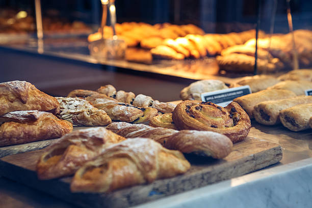

Our Bakery
Welcome to Sprinkle and Sweets, where passion meets perfection in every bite. For over 25 years, we've been crafting delightful treats that bring joy to our community.
- Artisanal recipes
- Premium ingredients
- Daily fresh-baked goods
Crafting joy with passion since 1995
Welcome to Sprinkle and Sweets, where passion meets perfection in every bite. For over 25 years, we've been crafting delightful treats that bring joy to our community.


Led by our master baker with over 20 years of experience, our team brings expertise and creativity to every creation.
Experience the art of traditional breadmaking with our handcrafted selections. Each loaf tells a story of passion, patience, and perfection.
Locally sourced, high-quality flour
24-hour fermentation for perfect flavor
Stone-hearth ovens for authentic taste

At Sprinkle and Sweets, we believe in building lasting relationships with everyone who contributes to our success.
Your satisfaction drives our innovation
Partnering for quality ingredients